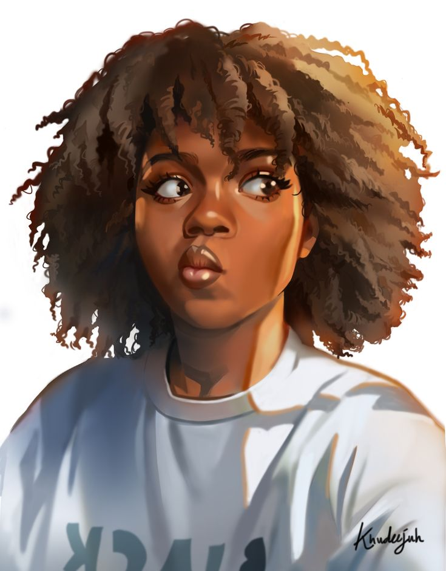

|  |
Hello! I'm Jackie |
Hi! I'm Jackie, born in the 80's in Congo and raised in Portugal
Curious, creative and spontaneous
Cancer zodic sign, love my family, art, and mother nature
I'm a Front end developer student
Learning and sharing my vision on the Black Codhers Bootcamp
I'm very enthusiatic about my work and love new challenges
On my free time I enjoy listening to music, hanging out with my friends and laughter
Love travelling to sunny places, fashion, eating nice meals and cocktails
I’m interested in web design, content development and digital content marketing
I’m looking to collaborate on future and exciting projects
I moved to Uk in 2013 and started to work in a call-center as a Portuguese speaker advisor at Rentalcars.com
Throughout the years I moved into different departments.
Worked 3 years as an operations executive where I developed my skills in problem solving.
At Booking.com I've worked as a Quality & Product assistant where I've build up valuable
relationships with different stakeholders.
Currently I am a Commercial projects administrator, and I lead projects to improve the usage of the apps
and consequently my work has a significant impact in the website product's display
Being curious is a quality.
It gives you a sense of self-awareness of the skills you already possess
And the more things you learn, the more skills you get
Any skill, natural or gained, are great value and can be transferred to different scenarios
That makes you accountable and prepared for multiple challenges you might encounter 💃🏽🏋🏽💪🏽🤹🏽